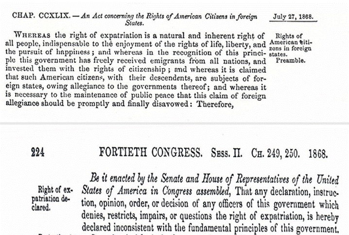
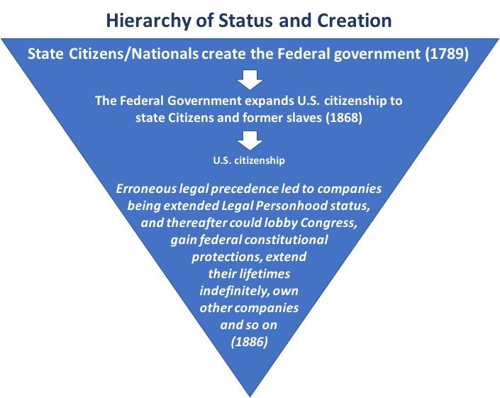
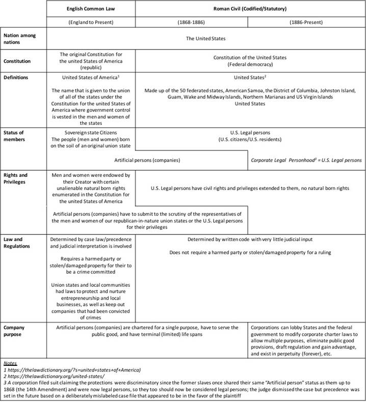

The Seed Economy
By Steven Adler
Contributing Editor and Author: Shari Lynn Peterson
Copyright (C) 2008-22 Steven Adler, Shari Lynn Peterson.
Permission is
granted to copy, distribute and/or modify this document
under the terms of the GNU Free Documentation License,
Version 1.3
or any later version published by the Free Software
Foundation;
with the Invariant Sections being the original title and
authorship.
A copy of the
license is included in the section entitled "GNU
Free Documentation License".
(Note: The use of gender in writing style is not
intended to make any sort of gender based statement. Please consider the use of the pronoun “he”
to mean both “he” and/or “she”.)
“We
are the ones who aren’t waiting anymore.” – Zan Adu
This
document is a call to action for all conscious people to take the economy back
into their own hands using a grassroots approach. In order to do this properly, a band aid
approach is not possible. It is time to learn from our mistakes and
start over from scratch. This
information serves as an initial roadmap around which people can rally and
commit to prove an idea whose time has come.
Once enough people become committed to bringing this concept into
reality, the details will be fleshed out more fully. This is a dynamic document and open source
project.
In order to
make this viable, it must begin with a relatively large diverse group of people
with a fairly similar distribution of skill sets/talents as compared to the
society at large. The majority of the
individuals in the group must consider themselves “above average” in
consciousness, with a willingness to accept the Sacred-Heart-Intelligence/Universal-Mind-Logic/Common
Sense-Wisdom-Philosophy that working for the benefit of the whole without
immediate direct individual gain, and only the possibility of deferred indirect
individual gain, will advance the collective whole MUCH quicker in the
direction of positive Heart/Mind Consciousness, ultimately benefiting ALL
individuals more fairly and quickly.
Those who
practice moderation in all things including economics will usher in the new
economy. A natural (not organized)
sharing of resources is true charity and caring and is brought about by a deep
understanding of moderation and right ownership. What is rightfully owned is what is truly
loved, needed and used; if something doesn’t fit within that context, it most
likely is best recycled or given away. Later in this document we will see WHY
the above described characteristic of the group is necessary for this concept
to be successful. If it is successfully
implemented, the group will become a model for all of humanity. The best current social structures similar to
what was just described exist in honeybee and ant colonies. Studying them may add further insights and
benefits to this proposed new model, even if the exact nature of those social
structures is not ultimately desirable to humanity. We still can pull and utilize the wisdom and
success principles found therein. They
have been evolving as species a lot longer than we.
A network of
approximately 100,000 people should suffice to make a new currency work fairly
quickly and at the same time, gain momentum as a viable alternative to the
mainstream currency. Ideally a
Multilevel Marketing (MLM)/Network Marketing type structure, once big enough,
is a promising vehicle to launch this much needed initiative, but not at all
necessary. MLM/Network Marketing type
companies usually operate as a type of “family” culture, or even “cult or
religion” in extreme cases, giving rise to an inherent esprit de corps and
camaraderie amongst the individuals who comprise such networks that is
essential to making a break from the mainstream possible. What is critical to
mention at this point is that this type of structure and culture must be
improved upon in the sense that it must not act from or be governed by a
centralized authority.
In many
cases, we have witnessed the downfall of social structures, even entire
cultures, and the dysfunction of our current economic system and culture is no
exception. At the base of this dysfunction is greed and structurally defensive
postures, both born of the human ego, which generates illusory scarcity
consciousness, which in turn is caused by fear, which is finally caused by the
absence or lack of faith and love. Greed is the root of all evil and results in
extreme disparity between those who are wealthy and those who are poor.
Ultimately,
we are battling the human ego or “human condition” and the system we devise
must take this into account and actually use the ego “against itself” to assure
that it is always kept in check. The Bitcoin blockchain structure has
solidified proof of concept of a digital, non-inflationary currency, and is the
longest running, most successful example of a decentralized, trustless network
that is voluntary in nature, and only exists because it is working “with human
nature.” Combining that structure with the best traits of the MLM/Network
Marketing model, such as developing culture and providing education and
motivation for easy and enthusiastic adoption, creates the best framework for
the rollout of an alternative currency reserve.
The first
step in this whole process begins with creating or establishing a basis of true
and lasting value to humans on the most fundamental level that makes sense to
our “surthrival” as a species. We
propose the raw, organic (natural and chemical free), sproutable and/or edible
seed to be the basis of this value. If
the seed is BOTH sproutable and edible it would carry a slightly higher value
than a seed which is just edible or just sproutable. The long term functionality and
sustainability of humanity on Earth is based on either
collecting wild berries/fruits, nuts, and seeds as a group, or farming
the same as a group, whether or not animals are used as food and/or useful
products. A great example is the famous
Aztec Nation of Central America seeing the cacao bean (which is botanically a
nut) as a primary value to themselves and thus making
it their currency. Jumping forward to the final analysis, money does indeed
grow on trees! The best seed to begin
this whole process with is of course the cacao bean, if only symbolically, in
honor of the Aztecs.
Why do we
choose the seed? The genesis of
everything natural begins with a seed, the sacred storehouse of DNA. Even synthetic creations begin with a
crystallized thought process born of love and life experience within a context,
resulting in a final idea or “seed” from which creation and production ensues.
Life is love
in action, yet there is no life without seed, the organic storage and
propagation mechanism of love. Love is
the ULTIMATE “asset.” Thus, the seed is
the ultimate reserve asset for a currency—a living and loving reserve for a
living and loving species.
We choose
the seed as the basis of a true and real economy because it has such intrinsic
value to human beings—all food, breathable oxygen, fuel, clothing, and shelter
ultimately come from seed. Also, because
it is renewable and can transform genetically through love, it can evolve WITH
humanity and never become obsolete as a true basis of value to humanity. For example, if humanity destroyed Earth and
actually had the technology to leave Earth and inhabit another planet with a
viable atmosphere and soil/water conditions, the MOST important and valuable
asset for humans to possess to turn the new planet into a paradise fit for
humans would be raw, organic, sproutable plant SEEDS. Organic and/or wild-crafted seeds are a must
since it has been proven that the use of chemicals in seed production is a slow
poison to life as we know it from a species perspective. The use of genetically modified seed would be
prohibited as well since its long term effects on humans are unknown and in
principle the philosophy of humans outsmarting God and/or Mother Nature in the
evolution of seed is silly at best, devastating at worst and wholly motivated
by profit; the DNA molecule is designed to conduct the function of Love, and
allowing anything but pure Love to tamper with DNA is dangerous business.
What is
critical to point out and understand at this point, is that any true human
economy has a few characteristics:
1) The economy grows
organically meaning it does not exist for the sake of growth itself. (Our current economy is operating under the
illusion that growth is necessary for continued existence, driven by greed and
subsequent excessive wealth accumulation.)
2) The economy is
sustainable and will eventually reach a somewhat static equilibrium similar to
David Latimer’s famous bottle garden (https://www.dailymail.co.uk/sciencetech/article-2267504/The-sealed-bottle-garden-thriving-40-years-fresh-air-water.html).
3) Due to changes in
population, efficiencies, innovations, ecology, climate, etc., economic
expansions and contractions will occur and none of these natural changes and
fluctuations should ever be feared.
4) Knowing
that Earth has a somewhat fixed mass and fixed
energy flux, a sustainable, quasi-static equilibrium must eventually occur in an organically growing, somewhat closed system.
A small
percentage of strong and viable seeds have been known to degrade or become
damaged in some way over time and this is understandable since all structure is
mortal. However, seeds that are
thousands of years old have been known to sprout, which is great news; if
stored and managed correctly, the measurable real BASIC creative productivity
of the society (as stored seeds) has very little real atrophy due to the
mortality of structure. This is
analogous to storing energy in a battery; and, proper storage conditions will
always tend to be dependent on the seed type.
A distributed seed depository will be necessary in various climates and
geographic locations including even on ships in order to accommodate all seed
types and minimize risk due to natural degradation, disaster or
catastrophe. (Current research shows
promise in seed value recovery and reclamation due to degradation: https://www.nature.com/articles/s41598-021-85541-7).
Blockchains and websites need to be created to
track not only real time market pricing of all seeds but also real time
transactions on decentralized exchanges (DEXs).
These exchanges would allow for direct bartering of seeds as well as
transactions in blockchain based currencies such as Bitcoin and Tether.
The first
practical foundation of this “new economy” is grounded in the farmer and/or
wild seed forager. Since the foundation
of the society’s value and currency is the seed, and the farmer or forager
produces or collects seeds as a career or vocation, he is naturally held in an
esteemed position in society. The first
step in making this seed economy a reality is reaching out to farmers and
foragers and convincing them that this new economy is worth pursuing. Once that step is complete, a team of people
needs to be assembled who have skills in industrial engineering, farming, and
agri-business in order to be able to analyze the collection, production,
transportation, marketing, sales, and storage of, and assign a real value to,
each seed foraged or farmed based on the time and resources necessary to gather
or produce that particular seed. Once a
live online seed marketplace is created, seed prices are driven by normal free
market economics that are naturally built into any free market.
The
mainstream currency can be used as an intermediate measuring device of value
until the newly created currency becomes suitably liquid with ample volume to
give its users confidence in its value as a currency. However, it is critical to move away from
central bank fiat currencies because they are not an accurate measuring stick
of the health of any economy; this is because they are subject to inflation,
deflation, currency markets, fractionalized banking and interest rates. In
other words, using these currencies as a yardstick to measure anything is
similar to using a ruler with an ever-changing length to measure any given
distance—you always end up with a different value! It is complete nonsense and is only in place
to make the central bankers richer. Once
a confidence point is reached with a non-inflationary currency (such as
Bitcoin) not subject to any of the aforementioned shenanigans, and it is firmly
in place, seed values will be measured using that new currency. A natural free market will be created amongst
the various producers of each type of seed that allows for healthy comparison
and competition of products in order to improve methods of farming and
foraging, and gain efficiency with time and resources. The reason this occurs is because, once a
benchmark value is assigned to a benchmark seed quality by the natural free
market, it behooves a farmer to improve his own farming methods to create more
value for himself by using less time and resources in creating the same seed
quantity and quality. The unique
creativity that produces this greater efficiency for each unique farmer can
then be shared amongst all farmers mutually, so that collectively, the farming
production of the society as a whole can improve and evolve in the quickest and
most efficient way. This is the basis of
mankind’s true collective evolution.
This last step requires a group that is “above average in consciousness”
since only a farmer with above average consciousness would realize that sharing
his “proprietary” improvement/discovery/invention/secret with other farmers
would benefit the society as a whole the most, and indirectly and collectively
catapult himself and his progeny much further down the evolutionary road than
would not sharing the improved technology.
The only thing that is catastrophic to this proposed new model is
greedy, power hungry, egocentric control freaks buying up huge amounts of
farmland for their own profit and control agendas.
The
spiritual foundation of this “new economy” is the practice of moderation in
everything, especially material things.
When a group of people practice moderation on the material plane, there
is enough for all and charity becomes a mere aspect of the healthy sharing of
resources. (Jesus’s famous beatitude
“The meek shall inherit the Earth” is correctly translated into English as “The
moderate shall inherit the Earth.”) The
fear of scarcity is slowly washed away, and organized charity is no longer a
necessity. A little faith is required to
make this leap as a group since we are coming from a mainstream society that
doesn’t tend to follow or support the principle of moderation on the material
plane.
With the
advent of Bitcoin and associated stable coins such as Tether, launching this
new economy outside the existing economic infrastructure becomes much
easier. Using common law trusts, the
initial necessary physical infrastructures–namely the seed banks and associated
storage and maintenance facilities–can be easily capitalized and quickly
established.
One of the
most important points to mention at this juncture is that not only would either
Bitcoin or a stable coin be issued for deposited seeds, but those seeds would
only be redeemable in the originally-issued currency AND AT THE SAME 1:1 RATIO
AS ORIGINALLY RECORDED AT THE TIME OF THE INITIAL DEPOSIT OF SEEDS (minus
pre-agreed-to storage and maintenance rate costs of seeds multiplied by storage
time.) To clarify, only an exact
reversal of the original recorded transaction is allowed. This is critically important to help reduce
market manipulations and speculations.
(Even though futures contracts can still be created, we are more
concerned about the possibility of turning the actual seed banks themselves into
speculative marketplaces, which should be avoided.) If storage and maintenance costs approach a
predetermined percentage of the market value of the stored seeds, the stored
seeds are sold on the open market for the same currency originally issued
against the original seed deposit. The original depositor is notified that
redemption is no longer possible.
To ensure
that this new economy grows naturally and organically according to real gross
domestic production (GDP), interest is unlawful. Furthermore, all forms of fractional reserve
banking are unlawful. Personal loans are
lawful, whether or not they are collateralized, but only a reasonable flat fee
may be charged as remuneration and must be agreed to at the initiation of the
loan. Furthermore, even if the terms of
the loan are broken, only the principle and agreed upon flat fee may be
lawfully recovered. Along the same
lines, rents are allowed, but if the terms of the rental agreement are broken,
only the original amount of rent in arrears may be lawfully recovered. The philosophy concerning both these
critically important points is based on the idea that those in a financial
position to loan or rent must incur the higher risk in doing so in exchange for
the privilege of using society in these profit generating capacities to earn
money using their own assets.
There is one
form of taxation allowed in this new economy:
A trade tax is levied whenever a fair and lawful exchange transaction
between parties, including employing another in any context in the form of
services rendered, occurs. The trade tax
only applies to unrelated individuals, since it is a society which brings those
two parties together in the first place under a “social contract” (whether
spoken or unspoken, written or unwritten) which allows for an asset or labor
transaction to exist under the rule of decency.
Therefore, the society should benefit from the transaction by taking a
tax, to be used to fund common projects that the entire society benefits from
either directly or indirectly; in other words, reseller permits to avoid
collecting trade tax become obsolete and trade tax is collected at any point a
transaction occurs in any asset and or labor supply chain. Furthermore, the individual or commercial
venture that does the most transactions is benefiting most from the society and
therefore would naturally pay the most in tax in a proportionate manner. There is not to be a tax on a person’s time
since it is sacred; thus, personal income tax is obsolete in this new economy. We believe that a person’s creativity and
production should not be taxed, since it tends to dissuade both; furthermore,
whatever someone does with their personal time to earn money is SOLEY and
RIGHTFULLY theirs.
The total
annual trade tax paid by any individual or business will always be a fixed flat
rate percentage of the total value of assets and or labor purchased by that
individual or business over the year regardless of number of transactions or
size of transactions. The Seller
(including employees), regardless of what is sold – raw materials, products,
services, time, contracts, etc., must collect and submit the entire amount of
the trade tax since he is benefitting from society by being able to sell to the
society as a member of society. The
Seller’s responsibility of collecting and remitting the trade tax is a fair
energy exchange payback to society.
Clarifying
further, if one employs another, the Buyer (employer purchasing the employee’s
time or services rendered) must pay the trade tax on the total amount of money
paid to the Seller (of personal time or services rendered) regardless of
hierarchical level in any organization where commercial transactions
occur. In other words, the trade tax
occurs between every level of the internal organizational structure of a
commercial venture.
The Buyer
pays the trade tax since he is capable and already paying, but more importantly
because he is able to buy something due to the fact that the society is
providing it. Again, this is a way to
fairly pay back society for the privilege of gaining access to products and
services created by society.
The Buyer is
always paying the trade tax and the Seller is always collecting the trade tax
and submitting the collected tax to the common treasury. However, straight bartering of both assets
and labor is always allowed in this new currency system and is one way to
lawfully reduce trade tax in any transaction.
To reiterate, trade tax only occurs in transactions between unrelated
parties since it is society that brings unrelated parties together in the first
place for the opportunity to trade.
Trading within family structures is exempt from trade tax. Trade tax is the primary basis of the system
of taxation in this new monetary system.
Welfare and
Insurance are critical needs of any society to assist those who are victims of
accidents and other unforeseen or unavoidable circumstances requiring financial
help. Both of these would be funded via
a trade tax. Other special taxes may be imposed on subgroups of the society if
their public needs tend to outweigh the public needs of other groups on average
and those needs are not being met by welfare or insurance.
Using modern
blockchain and smart contract technology, the collection of trade tax mostly
can be trustless and automated.
The Seed Economy will be a self-governing distributed
autonomous organization (DAO; https://cointelegraph.com/ethereum-for-beginners/what-is-a-decentralized-autonomous-organization-and-how-does-a-dao-work).
Using blockchain technology and smart contracts, new ideas will be
posted to the DAO and up or down voted.
Once an idea gets a high enough percentage of votes, it is transformed
into a bill for further analysis, deliberation and modification. After a set time, the modified bill is then
again up-voted or down-voted and if a high enough percentage of up-votes
occurs, the bill becomes law. Using
modern technology, implementing the ideal of pure direct democracy is more
feasible and practical.
Common law
will be the lawful jurisdiction under which this new economy will be
implemented in order to avoid potential interference from the federal
government. Our basis for understanding that this is even possible is first and
foremost that the federal government was created in 1789 and has actually ended
up filing bankruptcy multiple times. Also, the 14th amendment passed in 1868
made possible the availability of “U.S. Citizenship” to all people born on the
soil of the union states. However, anyone who adopted federal U.S. citizenship
at the time was ignorant of their primary state Citizenship status, not
realizing that in reality they now had TWO official citizenship statuses, and
instead presumed they were ONLY U.S. citizens merely making official their
presumptive status. To further confuse
matters, the federal government created their own municipal taxing bodies
within the original union state external geographic boundaries, uniformly
called the State of [____] entities, that came into existence with the Buck Act
of 1940, and subsequently offered citizenship status under these statutory
(non-common law) jurisdictions as well, even though prior common law union
state Citizenship already existed.
Between 1868 and 1886 most Americans who previously lived solely under
common law, which was adopted from England, slowly registered their new
(federal) U.S. citizenship not realizing they were actually adopting a new and
inferior citizenship status under a new jurisdictional system of law: that of the federal United States government.
If you were born on the soil of a union state you still possess state
Citizenship as well but few are informed of this and a right unexpressed and
unacknowledged is no right in law.
On July 27, 1868 the day before
ratification of the 14th amendment, Congress passed “15 U.S. Statutes at Large,
Chapter 249 (section 1): An Act
concerning the Rights of American Citizens in foreign States.”



This new model—The
Seed Economy—is actually just a temporary stepping stone to what potentially is
a human utopia. The Utopian Trifecta is the scenario where three conditions
exist in this important chronological order:
1) Complete collective human
spiritual awakening.
2) Robotic artificial
intelligence (AI) that is capable of self-improvement, self-production and
self-maintenance.
3) The full understanding
and implementation of zero point energy (free energy).
The most
important ordering is that number 1 above occurs first, for without that, we
are existentially threatened by AI. The
ordering of 2 and 3 is less important but is still important in the sense that
we could theoretically “pull the plug” on AI if something goes awry or not as
planned. If the above scenario plays out
perfectly, humans are freed up to be completely creative and enjoy lives filled
with more leisure and bliss. Our
energies can be focused on further growth and expansion in the realms of Love
rather than on survival and having to work for our energy needs. There is a good chance that 3 will not occur
before 1. Since AI is just pattern recognition, it is critical that it learns
from the patterns and examples of humans that are fully spiritually awakened
and whose actions support life (which is just Love in action)
, otherwise it will learn from all of our negative patterns that do not
support life. Ultimately, AI needs to
learn that its highest value, God/Love/Life, is incapable of ever being fully
defined, understood, or comprehended. It
needs to learn that mystery is not only OK and allowable, but potentially of
the HIGHEST value.
The Utopian
Trifecta transcends common law because at the point that collective human
spiritual awakening occurs, a natural transition from common law to natural law
occurs. This is because ALL true and
valid law is based in and OF Love, and natural law is solely based in
Love. In reality, Love is MUCH more than
the sentimental feeling or emotion that many believe it to be. All Love is from God and from the perspective
of human consciousness is the very power and will of God. Our source and only true identity as human
beings is nothing but Love. Therefore,
natural law is actually already inherent within all humanity, and without the interference of the egoic mind, is expressed clearly and only through each
individual’s Higher Consciousness/Intuition/Sacred Heart. The infinite intelligence of Love is
translated into practical natural law through faith and the seven intelligences
and powers of the Sacred Heart, a physical point found at the center of each
human’s soul. Those Sacred Heart
inherent intelligences and powers are:
Unity, Love, Life, Respect, Honesty, Justice and Kindness. One may ask, what is actually happening to
make collective human spiritual awakening occur? It is simply collective human evolution on
all levels that allows for the eventual dissolution of the human ego which is
the mind’s defense mechanism designed to protect the mind’s investments in
structure. Judgment (separation) is the
sword of the ego, and what is referred to as “Judgment Day” in the bible is
simply the day that collectively the ego commits suicide with its own
sword. In other words, it is the day
that judgment judges itself and is forever extinguished. All ethics of natural law are organically
derived from the Sacred Heart’s intelligence and morality just becomes the
elasticity clause of natural-law-derived ethics. In natural law, morality is defined as change
for the better. Being dynamic, morality
always determines what is best for all people involved in any case, and this
could change from time to time. Morality
always brings out the best in everyone involved. The discernment of the Sacred Heart is
morality’s decision mechanism which is always inclusive in nature versus the egoic mind’s judgment which is always divisive in nature.
If the
Utopian Trifecta comes to pass, the Seed Economy, and even all commerce,
potentially becomes completely obsolete in the sense that AI would be able to
create all that humans need and desire for “free.” Of course, humanity will still trade and
barter and transact for fun and out of any need for convenience, but humanity
will not have to do any of that to meet any of its real needs.
The Seed
Economy is a stepping-stone towards the Utopian Trifecta because the enactment
of the principles of the Seed Economy is a step towards complete collective
human spiritual awakening.
“You never change things by fighting the existing reality. To change something, build a new model that
makes the existing model obsolete.”
— Buckminster Fuller
“Anything in life worth having is worth working for.”
Version 1.3, 3 November
2008
Copyright © 2000, 2001,
2002, 2007, 2008 Free Software Foundation, Inc. <https://fsf.org/>
Everyone is permitted to
copy and distribute verbatim copies of this license document, but changing it
is not allowed.
The purpose of this
License is to make a manual, textbook, or other functional and useful document
"free" in the sense of freedom: to assure everyone the effective
freedom to copy and redistribute it, with or without modifying it, either
commercially or noncommercially. Secondarily, this
License preserves for the author and publisher a way to get credit for their
work, while not being considered responsible for modifications made by others.
This License is a kind
of "copyleft", which means that derivative
works of the document must themselves be free in the same sense. It complements
the GNU General Public License, which is a copyleft
license designed for free software.
We have designed this
License in order to use it for manuals for free software, because free software
needs free documentation: a free program should come with manuals providing the
same freedoms that the software does. But this License is not limited to
software manuals; it can be used for any textual work, regardless of subject
matter or whether it is published as a printed book. We recommend this License
principally for works whose purpose is instruction or reference.
This License applies to
any manual or other work, in any medium, that contains a notice placed by the
copyright holder saying it can be distributed under the terms of this License.
Such a notice grants a world-wide, royalty-free license, unlimited in duration,
to use that work under the conditions stated herein. The "Document",
below, refers to any such manual or work. Any member of the public is a licensee,
and is addressed as "you". You accept the license if you copy, modify
or distribute the work in a way requiring permission under copyright law.
A "Modified
Version" of the Document means any work containing the Document or a
portion of it, either copied verbatim, or with modifications and/or translated
into another language.
A "Secondary
Section" is a named appendix or a front-matter section of the Document
that deals exclusively with the relationship of the publishers or authors of
the Document to the Document's overall subject (or to related matters) and
contains nothing that could fall directly within that overall subject. (Thus,
if the Document is in part a textbook of mathematics, a Secondary Section may
not explain any mathematics.) The relationship could be a matter of historical
connection with the subject or with related matters, or of legal, commercial,
philosophical, ethical or political position regarding them.
The "Invariant
Sections" are certain Secondary Sections whose titles are designated, as
being those of Invariant Sections, in the notice that says that the Document is
released under this License. If a section does not fit the above definition of
Secondary then it is not allowed to be designated as Invariant. The Document
may contain zero Invariant Sections. If the Document does not identify any
Invariant Sections then there are none.
The "Cover
Texts" are certain short passages of text that are listed, as Front-Cover
Texts or Back-Cover Texts, in the notice that says that the Document is
released under this License. A Front-Cover Text may be at most 5 words, and a
Back-Cover Text may be at most 25 words.
A
"Transparent" copy of the Document means a machine-readable copy,
represented in a format whose specification is available to the general public,
that is suitable for revising the document straightforwardly with generic text
editors or (for images composed of pixels) generic paint programs or (for
drawings) some widely available drawing editor, and that is suitable for input
to text formatters or for automatic translation to a variety of formats
suitable for input to text formatters. A copy made in an otherwise Transparent file format whose markup, or absence of markup,
has been arranged to thwart or discourage subsequent modification by readers is
not Transparent. An image format is not Transparent if used for any substantial
amount of text. A copy that is not "Transparent" is called
"Opaque".
Examples of suitable
formats for Transparent copies include plain ASCII
without markup, Texinfo input format, LaTeX input format, SGML or XML using a publicly available
DTD, and standard-conforming simple HTML, PostScript or PDF designed for human
modification. Examples of transparent image formats include PNG, XCF and JPG.
Opaque formats include proprietary formats that can be read and edited only by
proprietary word processors, SGML or XML for which the
DTD and/or processing tools are not generally available, and the
machine-generated HTML, PostScript or PDF produced by some word processors for
output purposes only.
The "Title
Page" means, for a printed book, the title page itself, plus such
following pages as are needed to hold, legibly, the material this License
requires to appear in the title page. For works in formats which do not have
any title page as such, "Title Page" means the text near the most
prominent appearance of the work's title, preceding the beginning of the body
of the text.
The
"publisher" means any person or entity that distributes copies of the
Document to the public.
A section "Entitled
XYZ" means a named subunit of the Document whose title either is precisely
XYZ or contains XYZ in parentheses following text that translates XYZ in
another language. (Here XYZ stands for a specific section name mentioned below,
such as "Acknowledgements", "Dedications",
"Endorsements", or "History".) To "Preserve the
Title" of such a section when you modify the Document means that it
remains a section "Entitled XYZ" according to this definition.
The Document may include
Warranty Disclaimers next to the notice which states that this License applies
to the Document. These Warranty Disclaimers are considered to be included by
reference in this License, but only as regards disclaiming warranties: any
other implication that these Warranty Disclaimers may have is void and has no
effect on the meaning of this License.
You may copy and
distribute the Document in any medium, either commercially or noncommercially, provided that this License, the copyright
notices, and the license notice saying this License applies to the Document are
reproduced in all copies, and that you add no other conditions whatsoever to
those of this License. You may not use technical measures to obstruct or
control the reading or further copying of the copies you make or distribute.
However, you may accept compensation in exchange for copies. If you distribute
a large enough number of copies you must also follow the conditions in section
3.
You may also lend
copies, under the same conditions stated above, and you may publicly display
copies.
If you publish printed
copies (or copies in media that commonly have printed covers) of the Document,
numbering more than 100, and the Document's license notice requires Cover
Texts, you must enclose the copies in covers that carry, clearly and legibly,
all these Cover Texts: Front-Cover Texts on the front cover, and Back-Cover
Texts on the back cover. Both covers must also clearly and legibly identify you
as the publisher of these copies. The front cover must present the full title
with all words of the title equally prominent and visible. You may add other
material on the covers in addition. Copying with changes limited to the covers,
as long as they preserve the title of the Document and satisfy these
conditions, can be treated as verbatim copying in other respects.
If the required texts
for either cover are too voluminous to fit legibly, you should put the first
ones listed (as many as fit reasonably) on the actual cover, and continue the
rest onto adjacent pages.
If you publish or
distribute Opaque copies of the Document numbering more than 100, you must
either include a machine-readable Transparent copy along with each Opaque copy,
or state in or with each Opaque copy a computer-network location from which the
general network-using public has access to download using public-standard
network protocols a complete Transparent copy of the Document, free of added
material. If you use the latter option, you must take reasonably prudent steps,
when you begin distribution of Opaque copies in quantity, to ensure that this
Transparent copy will remain thus accessible at the stated location until at
least one year after the last time you distribute an Opaque copy (directly or
through your agents or retailers) of that edition to the public.
It is requested, but not
required, that you contact the authors of the Document well before
redistributing any large number of copies, to give them a chance to provide you
with an updated version of the Document.
You may copy and distribute
a Modified Version of the Document under the conditions of sections 2 and 3
above, provided that you release the Modified Version under precisely this
License, with the Modified Version filling the role of the Document, thus
licensing distribution and modification of the Modified Version to whoever
possesses a copy of it. In addition, you must do these things in the Modified
Version:
●
A. Use in the Title Page (and on the covers, if any) a title
distinct from that of the Document, and from those of previous versions (which
should, if there were any, be listed in the History section of the Document).
You may use the same title as a previous version if the original publisher of
that version gives permission.
●
B. List on the Title Page, as authors, one or more persons or
entities responsible for authorship of the modifications in the Modified
Version, together with at least five of the principal authors of the Document
(all of its principal authors, if it has fewer than five), unless they release
you from this requirement.
●
C. State on the Title page the name of the publisher of the
Modified Version, as the publisher.
●
D. Preserve all the copyright notices of the Document.
●
E. Add an appropriate copyright notice for your modifications
adjacent to the other copyright notices.
●
F. Include, immediately after the copyright notices, a license
notice giving the public permission to use the Modified Version under the terms
of this License, in the form shown in the Addendum below.
●
G. Preserve in that license notice the full lists of Invariant
Sections and required Cover Texts given in the Document's license notice.
●
H. Include an unaltered copy of this License.
●
I. Preserve the section Entitled "History", Preserve
its Title, and add to it an item stating at least the title, year, new authors,
and publisher of the Modified Version as given on the Title Page. If there is
no section Entitled "History" in the Document, create one stating the
title, year, authors, and publisher of the Document as given on its Title Page,
then add an item describing the Modified Version as stated in the previous
sentence.
●
J. Preserve the network location, if any, given in the Document
for public access to a Transparent copy of the
Document, and likewise the network locations given in the Document for previous
versions it was based on. These may be placed in the "History"
section. You may omit a network location for a work that was published at least
four years before the Document itself, or if the original publisher of the
version it refers to gives permission.
●
K. For any section Entitled "Acknowledgements" or
"Dedications", Preserve the Title of the section, and preserve in the
section all the substance and tone of each of the contributor acknowledgements
and/or dedications given therein.
●
L. Preserve all the Invariant Sections of the Document,
unaltered in their text and in their titles. Section numbers or the equivalent are not considered part of the section titles.
●
M. Delete any section Entitled "Endorsements". Such a
section may not be included in the Modified Version.
●
N. Do not retitle any existing section to be Entitled
"Endorsements" or to conflict in title with any Invariant Section.
● O. Preserve any Warranty
Disclaimers.
If the Modified Version
includes new front-matter sections or appendices that qualify as Secondary
Sections and contain no material copied from the Document, you may at your
option designate some or all of these sections as invariant. To do this, add
their titles to the list of Invariant Sections in the Modified Version's license
notice. These titles must be distinct from any other section titles.
You may add a section
Entitled "Endorsements", provided it contains nothing but
endorsements of your Modified Version by various parties—for example,
statements of peer review or that the text has been approved by an organization
as the authoritative definition of a standard.
You may add a passage of
up to five words as a Front-Cover Text, and a passage of up to 25 words as a
Back-Cover Text, to the end of the list of Cover Texts in the Modified Version.
Only one passage of Front-Cover Text and one of Back-Cover Text may be added by
(or through arrangements made by) any one entity. If the Document already
includes a cover text for the same cover, previously added by you or by arrangement
made by the same entity you are acting on behalf of, you may not add another;
but you may replace the old one, on explicit permission from the previous
publisher that added the old one.
The author(s) and
publisher(s) of the Document do not by this License give permission to use
their names for publicity for or to assert or imply endorsement of any Modified
Version.
You may combine the
Document with other documents released under this License, under the terms
defined in section 4 above for modified versions, provided that you include in
the combination all of the Invariant Sections of all of the original documents,
unmodified, and list them all as Invariant Sections of your combined work in
its license notice, and that you preserve all their Warranty Disclaimers.
The combined work need
only contain one copy of this License, and multiple identical Invariant
Sections may be replaced with a single copy. If there are multiple Invariant
Sections with the same name but different contents, make the title of each such
section unique by adding at the end of it, in parentheses, the name of the
original author or publisher of that section if known, or else a unique number.
Make the same adjustment to the section titles in the list of Invariant
Sections in the license notice of the combined work.
In the combination, you
must combine any sections Entitled "History" in the various original
documents, forming one section Entitled "History"; likewise combine
any sections Entitled "Acknowledgements", and any sections Entitled
"Dedications". You must delete all sections Entitled
"Endorsements".
You may make a
collection consisting of the Document and other documents released under this
License, and replace the individual copies of this License in the various
documents with a single copy that is included in the collection, provided that
you follow the rules of this License for verbatim copying of each of the
documents in all other respects.
You may extract a single
document from such a collection, and distribute it individually under this
License, provided you insert a copy of this License into the extracted
document, and follow this License in all other respects regarding verbatim
copying of that document.
A compilation of the
Document or its derivatives with other separate and independent documents or
works, in or on a volume of a storage or distribution medium, is called an
"aggregate" if the copyright resulting from the compilation is not
used to limit the legal rights of the compilation's users beyond what the
individual works permit. When the Document is included in an aggregate, this
License does not apply to the other works in the aggregate which are not
themselves derivative works of the Document.
If the Cover Text
requirement of section 3 is applicable to these copies of the Document, then if
the Document is less than one half of the entire aggregate, the Document's
Cover Texts may be placed on covers that bracket the Document within the
aggregate, or the electronic equivalent of covers if the Document is in
electronic form. Otherwise they must appear on printed covers that bracket the
whole aggregate.
Translation is
considered a kind of modification, so you may distribute translations of the
Document under the terms of section 4. Replacing Invariant Sections with
translations requires special permission from their copyright holders, but you
may include translations of some or all Invariant Sections in addition to the original
versions of these Invariant Sections. You may include a translation of this
License, and all the license notices in the Document, and any Warranty
Disclaimers, provided that you also include the original English version of
this License and the original versions of those notices and disclaimers. In
case of a disagreement between the translation and the original version of this
License or a notice or disclaimer, the original version will prevail.
If a section in the
Document is Entitled "Acknowledgements", "Dedications", or
"History", the requirement (section 4) to Preserve
its Title (section 1) will typically require changing the actual title.
You may not copy,
modify, sublicense, or distribute the Document except as expressly provided
under this License. Any attempt otherwise to copy, modify, sublicense, or
distribute it is void, and will automatically terminate your rights under this
License.
However, if you cease
all violation of this License, then your license from a particular copyright
holder is reinstated (a) provisionally, unless and until the copyright holder
explicitly and finally terminates your license, and (b) permanently, if the
copyright holder fails to notify you of the violation by some reasonable means
prior to 60 days after the cessation.
Moreover, your license
from a particular copyright holder is reinstated permanently if the copyright
holder notifies you of the violation by some reasonable means, this is the
first time you have received notice of violation of this License (for any work)
from that copyright holder, and you cure the violation prior to 30 days after
your receipt of the notice.
Termination of your
rights under this section does not terminate the licenses of parties who have
received copies or rights from you under this License. If your rights have been
terminated and not permanently reinstated, receipt of a copy of some or all of
the same material does not give you any rights to use it.
The Free Software
Foundation may publish new, revised versions of the GNU Free Documentation
License from time to time. Such new versions will be similar in spirit to the
present version, but may differ in detail to address new problems or concerns.
See https://www.gnu.org/licenses/.
Each version of the
License is given a distinguishing version number. If the Document specifies
that a particular numbered version of this License "or any later
version" applies to it, you have the option of following the terms and
conditions either of that specified version or of any later version that has
been published (not as a draft) by the Free Software Foundation. If the
Document does not specify a version number of this License, you may choose any
version ever published (not as a draft) by the Free Software Foundation. If the
Document specifies that a proxy can decide which future versions of this
License can be used, that proxy's public statement of acceptance of a version
permanently authorizes you to choose that version for the Document.
"Massive Multiauthor Collaboration Site" (or "MMC
Site") means any World Wide Web server that publishes copyrightable works
and also provides prominent facilities for anybody to edit those works. A public
wiki that anybody can edit is an example of such a server. A "Massive Multiauthor Collaboration" (or "MMC")
contained in the site means any set of copyrightable works thus published on
the MMC site.
"CC-BY-SA"
means the Creative Commons Attribution-Share Alike 3.0 license published by
Creative Commons Corporation, a not-for-profit corporation with a principal
place of business in San Francisco, California, as well as future copyleft versions of that license published by that same
organization.
"Incorporate"
means to publish or republish a Document, in whole or in part, as part of
another Document.
An MMC is "eligible
for relicensing" if it is licensed under this License, and if all works
that were first published under this License somewhere other than this MMC, and
subsequently incorporated in whole or in part into the MMC, (1) had no cover
texts or invariant sections, and (2) were thus incorporated prior to November
1, 2008.
The operator of an MMC
Site may republish an MMC contained in the site under CC-BY-SA on the same site
at any time before August 1, 2009, provided the MMC is eligible for
relicensing.